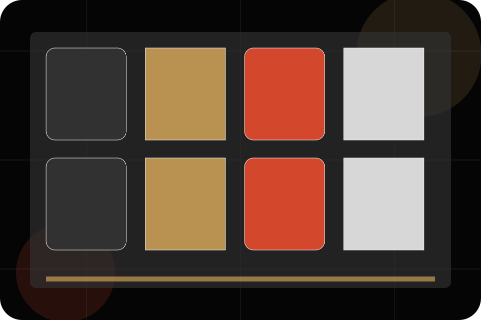
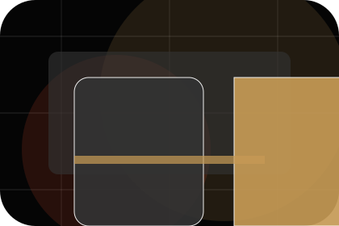
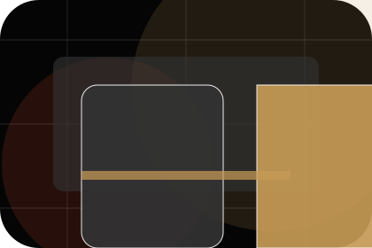
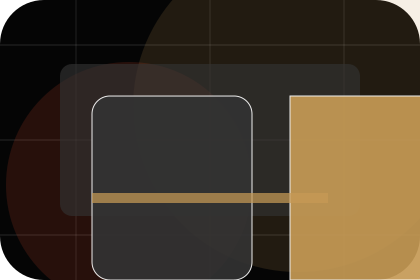
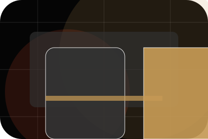
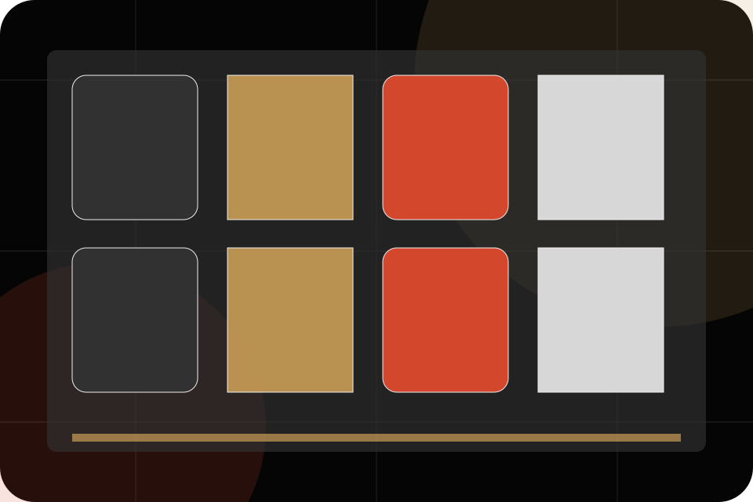
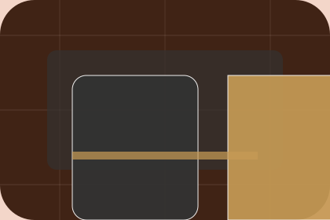

Contact / 01
Contact by Stage
Contact shaped for entertainment, music & performance decisions.
Contact opens as a clear entertainment decision hub: what Stage offers, who it helps, why it matters, and which route to take first.
The first screen combines positioning, proof, primary action, and fast internal navigation, so people can act immediately or compare the rest of the contact route with context.
Exposure reviewControl planResponse route
Dark poster hero
Choose ticket fit
Select the closest route and Stage keeps the next step, proof, and follow-up expectation aligned with excitement and access.

Contact / 02
Booking
Booking makes the contact path concrete: what to send, how the response works, and what Stage needs before visitors view tickets.
The section reduces contact friction by naming the channel, expected detail, privacy path, and response expectation instead of dropping visitors into a generic form.
View TicketsStage keeps booking practical: send the key details, choose the right contact route, and know what kind of reply to expect.
View TicketsDark poster hero
Choose ticket fit
Select the closest route and Stage keeps the next step, proof, and follow-up expectation aligned with excitement and access.
Contact / 03
Press
Press makes the contact path concrete: what to send, how the response works, and what Stage needs before visitors view tickets.
The section reduces contact friction by naming the channel, expected detail, privacy path, and response expectation instead of dropping visitors into a generic form.
View TicketsDetails
What information helps Stage respond with a useful answer instead of a generic reply.
Timing
How the visitor should think about response, urgency, location, or availability.
Reply
The expected next message keeps scope, timing, and the first practical step clear.
Contact / 04
Venue
Venue makes the contact path concrete: what to send, how the response works, and what Stage needs before visitors view tickets.
The section reduces contact friction by naming the channel, expected detail, privacy path, and response expectation instead of dropping visitors into a generic form.
View TicketsDetails
What information helps Stage respond with a useful answer instead of a generic reply.
Timing
How the visitor should think about response, urgency, location, or availability.
Reply
The expected next message keeps scope, timing, and the first practical step clear.
Contact / 05
Partnerships
Partnerships gives the proof layer for contact: standards, evidence, and reassurance that make the next decision feel grounded.
Instead of relying on vague claims, Stage presents visible standards, process cues, and proof artifacts that help entertainment visitors judge fit.
View Tickets

Evidence
Visible proof that helps visitors believe the claims behind partnerships.
Contact / 06
Phone
Phone makes the contact path concrete: what to send, how the response works, and what Stage needs before visitors view tickets.
The section reduces contact friction by naming the channel, expected detail, privacy path, and response expectation instead of dropping visitors into a generic form.
View TicketsDetails
What information helps Stage respond with a useful answer instead of a generic reply.

Timing
How the visitor should think about response, urgency, location, or availability.

Reply
The expected next message keeps scope, timing, and the first practical step clear.
Contact / 07
Form
Form makes the contact path concrete: what to send, how the response works, and what Stage needs before visitors view tickets.
The section reduces contact friction by naming the channel, expected detail, privacy path, and response expectation instead of dropping visitors into a generic form.
View TicketsStage keeps form practical: send the key details, choose the right contact route, and know what kind of reply to expect.
View Tickets
Contact / 08
Response
Response makes the contact path concrete: what to send, how the response works, and what Stage needs before visitors view tickets.
The section reduces contact friction by naming the channel, expected detail, privacy path, and response expectation instead of dropping visitors into a generic form.
View TicketsDetails
What information helps Stage respond with a useful answer instead of a generic reply.
Timing
How the visitor should think about response, urgency, location, or availability.
Reply
The expected next message keeps scope, timing, and the first practical step clear.
Contact / 09
Submit
Submit makes the contact path concrete: what to send, how the response works, and what Stage needs before visitors view tickets.
The section reduces contact friction by naming the channel, expected detail, privacy path, and response expectation instead of dropping visitors into a generic form.
View TicketsDetails
What information helps Stage respond with a useful answer instead of a generic reply.
Timing
How the visitor should think about response, urgency, location, or availability.
Reply
The expected next message keeps scope, timing, and the first practical step clear.
Contact / 10
View Tickets
Stage closes the contact route with a clear action, a quick reminder of the value, and a low-friction way to view tickets.
Visitors who are ready can use the primary action. Visitors who are still comparing can scan the section links, proof, and support routes before they view tickets.
View TicketsThe final block keeps the choice simple: act now, compare one more proof route, or send enough detail for a focused response.
View Ticketsexcitement and access
View Tickets
An entertainment site with film-poster rhythm, dark editorial cards, ticket routes, and venue proof. Contact ends with a direct path to view tickets, plus enough context for visitors who still need to compare.

View TicketsNotes
Information is provided for planning and should be reviewed for the final client, location, and operating rules.